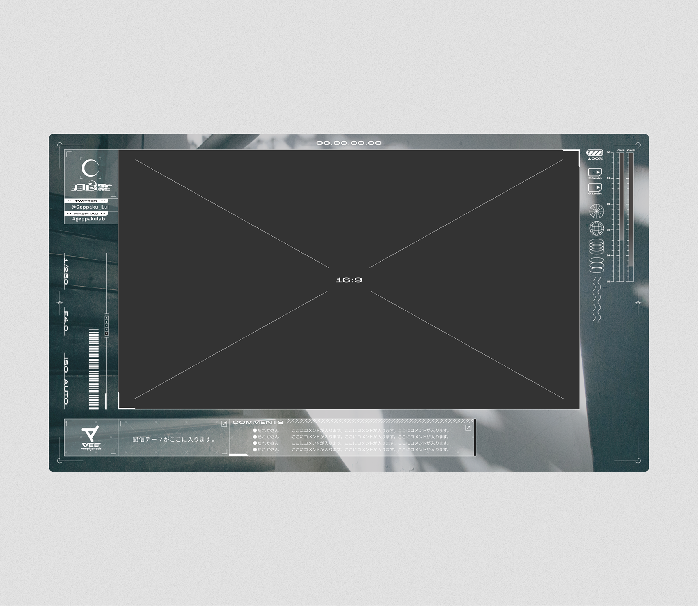
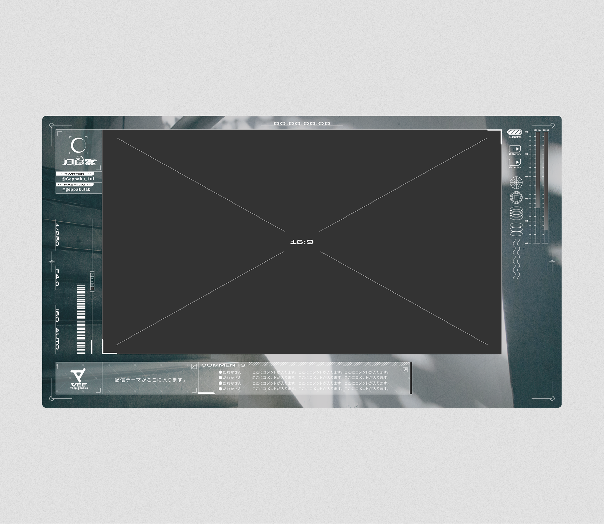

SONY Music VEE Geppaku-Rui
- Scope
- ビジュアルアイデンティティの構築と展開
- Date
- 2023.4.10〜
- Client
- Sony Music Entertainment (Japan) Inc.
- Client URL
- https://www.youtube.com/@Geppaku_Lui
- Output
- Logo,OBS overlay
Sony Music VEEよりデビューし、タレント活動を行う月白累さんの
デザイン制作を担当しています。
「デジタルカメラで映し出された中でしか見えない存在」をコンセプトに自信の世界観はとても無機質な存在となっています。
しかし、月白さんの活動の魅力として歌唱の高さもあり、その歌唱を行なっている際は、いつもとは違う力強い歌声を魅せてくれます。
その無機質な中にところどころ感じられる人としての有機さは、他の活動者にはない一番の価値と感じ、
有機なものと曖昧な世界観を世界観の基点としロゴをはじめとした、配信画面デザイン、スケジュール表デザインなどに展開しつつビジュアル開発を行いました。
We are in charge of design production for Rui Tsukihaku, who debuted from Sony Music VEE and is active as a TV personality.
Her worldview is very inorganic, based on the concept of "an existence that can only be seen in the reflection of a digital camera."
However, one of the most attractive aspects of Ms. Tsukihira's activities is her singing, and when she sings, her powerful voice is always different from her usual voice.
The organic quality that can be felt in some places in the inorganic nature of his activities is the most valuable thing that he does not have in other activities,
We developed the logo, distribution screen design, schedule design, and other visuals based on this organic and ambiguous view of the world.


 
2024年の月白さんの誕生日企画として行われた「孤独の点でつながる歌枠リレー」のロゴデザインです。
この企画は月白さんと関わりの多い活動者を招待して歌唱を行うライブストリーミングを時間をずらしたリレー形式で行うものです。
個々の個性を点とし、それぞが繋がる様子と月白さんの他者との関わり方への考えが企画のネーミングに表現されています。
This is the logo design for the "Singing Frame Relay Connecting at the Dots of Solitude" project, which was held as a birthday project for Mr. Geshaku in 2024.
This project is a time-staggered relay of live-streamed singing performances by invited activists who are often associated with Mr. Gueshaku.
The naming of the project expresses the connection between the dots of individuality and Mr. Gueshaku's thoughts on how to relate to others.

月白さんが所属するVEEと同じ所属の言のハさんと共同で配信や歌唱を行う際に使用するユニット名
月言夜行局 - GETSUGEN YAKOUKYOKUの作字ロゴタイプです。
ファンアートとしてXに投稿したものを採用いただき、活用いただいています。
夜をテーマにした静かで落ち着きのある雰囲気を醸す造形を行なっています。
Unit name to be used for joint distribution and singing with Mr. Tsukihaku's VEE and Mr. Kotoba's Ha of the same affiliation.
This is a logotype of GETSUGEN YAKOUKYOKU.
It was submitted to X as fan art and has been adopted and utilized.
The logo is designed to create a quiet and calm atmosphere based on the theme of night.